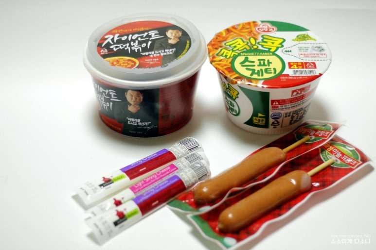
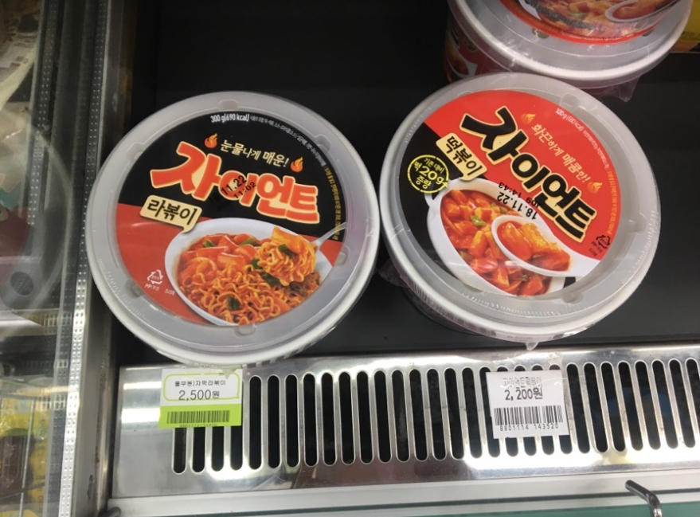
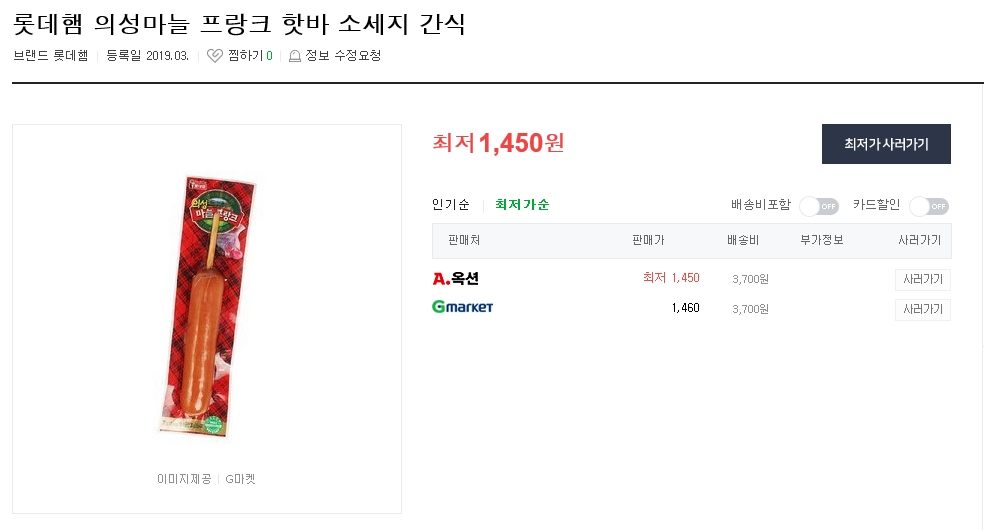
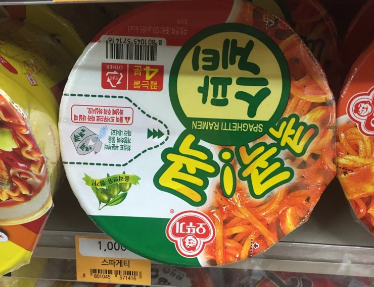
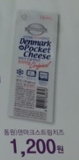
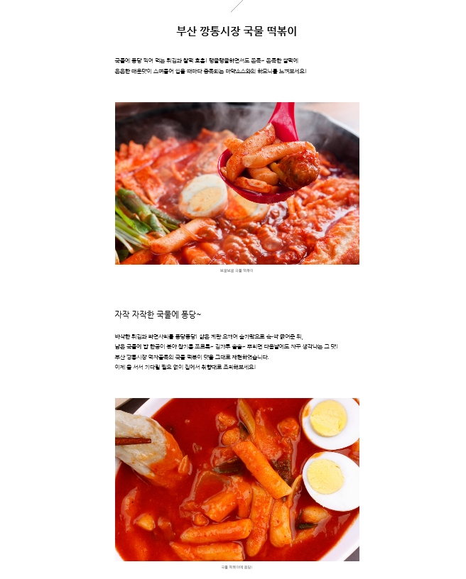
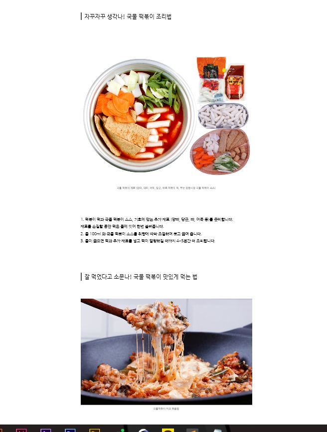
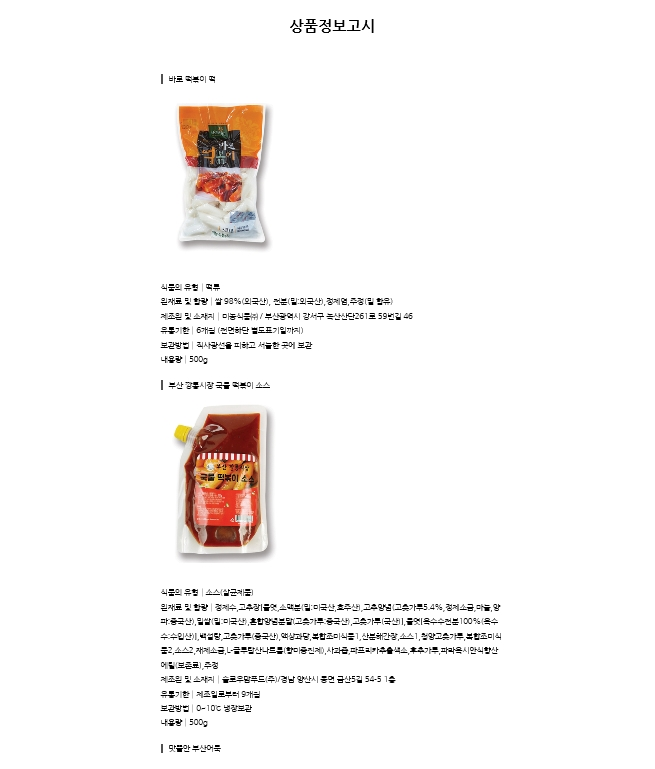
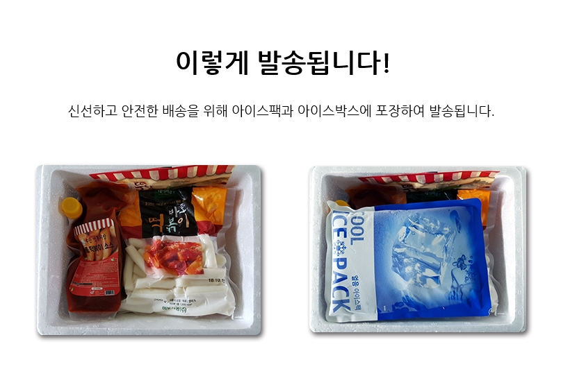

아이템기본구성

1.국물떡볶이(자이언트 떡볶이)
2.편의점 소세지
3.콕콕콕스파게티 컵라면
4.스트링치즈2개
가격구성

자이언트 떡볶이:2200원

의성마늘후랑크:1500원정도

콕콕콕 스파게티 컵라면:1000원

덴마크 스트링치즈:1200원
유사제품의 상세페이지 분석
처음 맨위쪽에서 전체재료들을 합친 모습을 보여주고 시작.
그 다음, 먹음직스러운 완성된 음식의 모습을 보여주고, 어떠한 음식인지에 대한 간단한 설명과 시각적 효과를 많이 준 사진 사용.

음식의 대한 자세한 설명.

음식 조리방법과 조리시꿀팁.

음식을 만들기 위해 함께 포함된 재료에 대한 설명

음식에 필요한 재료들의 배송방법과 전체샷.
차별점 및 구매포인트
1.보통 편의점에서는 마크정식 세트라고 따로 세트로 판매하지 않는다.
2.일일이 낱개로 재료를 사려고 하다보면 하나씩 은근 돈이 든다.
가끔 필요한 재료들 중에 재고가 없는 경우가 있어 만들어 먹고 싶을때 못만들어 먹기도 한다.
*마크정식 재료를 대량으로 구입해서 단가를 낮추고 아예 마크정식자체의 재료를 세트로 해서 판매를 한다면?
-좀더 싼 가격에 사서 만들어먹을수 있다는 경제적 경쟁력과 재료의 재고불안에 떨지 않고 이리저리 재료를 사러 다닐필요 없이 한방에 맛있는 마크정식을 해먹을 수 있다는 편리성 증가.
간단한 제작 기획안
*유사한 사이트의 상세페이지를 참고하여 아래 순서대로 구성할 예정*
1.마크정식의 간단하고 예쁜 이미지 제시
2.마크정식의 조리 방법
3.마크정식 조리시 꿀팁(더맛있게 먹는 방법)
4.마크정식 재료들의 소개
5.마크정식 총 재료들의 최종 포장된 모습 제시
*가격은 원래 가격 2200+1200+1000+1500=5900
*페키지 가격은 "5000원"